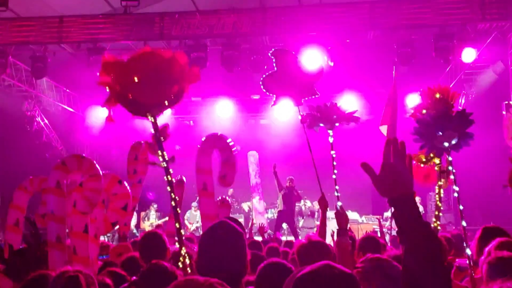

About Bonnaroo
Bonnaroo is a 4 day music festival held in Manchester Tennessee during the month of June. Over the 700 acre farm you can find stages, patches of forest, vendors, and lots of mediums of artistic expression. Not only is there diverse music during the festival, there is also comedy, theater performers, silent disco, things like yoga and the “Roo Run”, Pride Parade, and even more! It’s truly a place to fully express yourself and be who you want to be within such a loving and accepting environment. A saying of our fellow Bonnaroovians is "Radiate Positivity!"!
The History of 'Roo
Bonnaroo got its name from “Bonne”, meaning “good”, and “rue”, meaning “street”. It’s derived from the French language, and comes from a saying “best on the street”. Bonnaroo can also be defined in Creole slang as “a really good time”. The first Bonnaroo was in 2002 with about 70k attendees starting at only $100 for 3 days, and quickly increased to $170 before selling out within only a couple of weeks after announcement. It’s location was originally home to another festival named “Itchycoo” that only had one year in 1999 with 20k attendees, but workers had quit mid festival when they discovered their work would not be paid. That allowed Bonnaroo to have the perfect set-up to begin their now, 22 year journey. The 2002 headliners were Widespread Panic and Trey Anastasio, and now in 2024 they are Red Hot Chili Peppers and Post Malone.